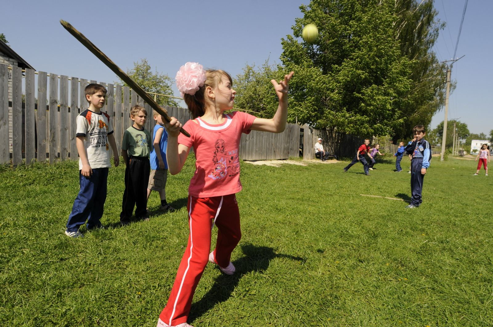

Чувашская народная дворовая игра
Лапта

Правила игры :
Я знаю два варианта игры. Один упрощённый (детский), другой взрослый. В детстве, на даче, мы конечно играли в простой:
На ровной лужайке на расстоянии 15—20 м друг от друга проводили две линии: одна называлась городом, другая — коном, или домом.
Потом, используя считалку или жребий, определяется бьющий, он становился за чертой города, остальные располагались в поле за коном.
Бьющий подбрасывает мяч и сам же сильно ударяет по нему битой. Полевые игроки, наблюдая за мечём, ждут, когда он пересечет кон, чтобы, не дав ему опуститься на землю, поймать. Если это им удаётся, бьющий идет в поле, а его место занимает игрок, завладевший мячом. Если же полевые игроки, зазевавшись, не успевали поймать мяч, удар повторяется.
Бывает, что бьющий промахивается по мячу. Правила разрешают ему повторить удар. После третьего промаха бьющий уступает свое место другому игроку.
Более подробнее об игре :
Перейти